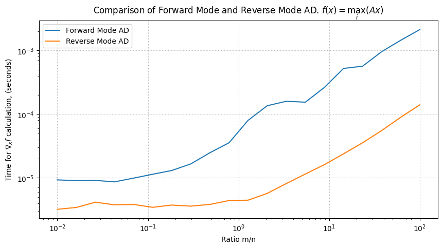

Requirement already satisfied: autograd in /Users/bratishka/.pyenv/versions/3.9.17/envs/benchmarx/lib/python3.9/site-packages (1.6.2)
Requirement already satisfied: numpy>=1.12 in /Users/bratishka/.pyenv/versions/3.9.17/envs/benchmarx/lib/python3.9/site-packages (from autograd) (1.25.2)
Requirement already satisfied: future>=0.15.2 in /Users/bratishka/.pyenv/versions/3.9.17/envs/benchmarx/lib/python3.9/site-packages (from autograd) (0.18.3)
[notice] A new release of pip is available: 23.2.1 -> 23.3.1
[notice] To update, run: python3.9 -m pip install --upgrade pip
0.1 Autograd
0.1.1 Autograd library
import autograd.numpy as np # Thinly-wrapped version of Numpyfrom autograd import graddef taylor_sine(x): # Taylor approximation to sine function ans = currterm = x i =0while np.abs(currterm) >0.001: currterm =-currterm * x**2/ ((2* i +3) * (2* i +2)) ans = ans + currterm i +=1return ansgrad_sine = grad(taylor_sine)print(f"Gradient of sin(pi) is {grad_sine(np.pi)}")
Gradient of sin(pi) is -0.9998995297042174
0.1.2 PyTorch autograd
0.1.2.1 Manual gradient implementation
import numpy as np# Compute every step manually# Linear regression# f = w * x# here : f = 2 * xX = np.array([1, 2, 3, 4], dtype=np.float32)Y = np.array([2, 4, 6, 8], dtype=np.float32)w =0.0# model outputdef forward(x):return w * x# loss = MSEdef loss(y, y_pred):return ((y_pred - y)**2).mean()# J = MSE = 1/N * (w*x - y)**2# dJ/dw = 1/N * 2x(w*x - y)def gradient(x, y, y_pred):return np.dot(2*x, y_pred - y).mean()print(f'Prediction before training: f(5) = {forward(5):.3f}')# Traininglearning_rate =0.01n_iters =20for epoch inrange(n_iters):# predict = forward pass y_pred = forward(X)# loss l = loss(Y, y_pred)# calculate gradients dw = gradient(X, Y, y_pred)# update weights w -= learning_rate * dwif epoch %2==0:print(f'epoch {epoch+1}: w = {w:.3f}, loss = {l:.8f}')print(f'Prediction after training: f(5) = {forward(5):.3f}')
Prediction before training: f(5) = 0.000
epoch 1: w = 1.200, loss = 30.00000000
epoch 3: w = 1.872, loss = 0.76800019
epoch 5: w = 1.980, loss = 0.01966083
epoch 7: w = 1.997, loss = 0.00050332
epoch 9: w = 1.999, loss = 0.00001288
epoch 11: w = 2.000, loss = 0.00000033
epoch 13: w = 2.000, loss = 0.00000001
epoch 15: w = 2.000, loss = 0.00000000
epoch 17: w = 2.000, loss = 0.00000000
epoch 19: w = 2.000, loss = 0.00000000
Prediction after training: f(5) = 10.000
0.1.2.2 Automatic gradient
import torch# Here we replace the manually computed gradient with autograd# Linear regression# f = w * x# here : f = 2 * xX = torch.tensor([1, 2, 3, 4], dtype=torch.float32)Y = torch.tensor([2, 4, 6, 8], dtype=torch.float32)w = torch.tensor(0.0, dtype=torch.float32, requires_grad=True)# model outputdef forward(x):return w * x# loss = MSEdef loss(y, y_pred):return ((y_pred - y)**2).mean()print(f'Prediction before training: f(5) = {forward(5).item():.3f}')# Traininglearning_rate =0.01n_iters =100for epoch inrange(n_iters):# predict = forward pass y_pred = forward(X)# loss l = loss(Y, y_pred)# calculate gradients = backward pass l.backward()# update weights#w.data = w.data - learning_rate * w.gradwith torch.no_grad(): w -= learning_rate * w.grad# zero the gradients after updating w.grad.zero_()if epoch %10==0:print(f'epoch {epoch+1}: w = {w.item():.3f}, loss = {l.item():.8f}')print(f'Prediction after training: f(5) = {forward(5).item():.3f}')
Prediction before training: f(5) = 0.000
epoch 1: w = 0.300, loss = 30.00000000
epoch 11: w = 1.665, loss = 1.16278565
epoch 21: w = 1.934, loss = 0.04506890
epoch 31: w = 1.987, loss = 0.00174685
epoch 41: w = 1.997, loss = 0.00006770
epoch 51: w = 1.999, loss = 0.00000262
epoch 61: w = 2.000, loss = 0.00000010
epoch 71: w = 2.000, loss = 0.00000000
epoch 81: w = 2.000, loss = 0.00000000
epoch 91: w = 2.000, loss = 0.00000000
Prediction after training: f(5) = 10.000
0.1.3 Jax autograd
JAX is NumPy on the CPU, GPU, and TPU, with great automatic differentiation for high-performance machine learning research.
import jax.numpy as jnpfrom jax import grad, jit, vmapfrom jax import randomkey = random.PRNGKey(0)
def sigmoid(x):return0.5* (jnp.tanh(x /2) +1)# Outputs probability of a label being true.def predict(W, b, inputs):return sigmoid(jnp.dot(inputs, W) + b)# Build a toy dataset.inputs = jnp.array([[0.52, 1.12, 0.77], [0.88, -1.08, 0.15], [0.52, 0.06, -1.30], [0.74, -2.49, 1.39]])targets = jnp.array([True, True, False, True])# Training loss is the negative log-likelihood of the training examples.def loss(W, b): preds = predict(W, b, inputs) label_probs = preds * targets + (1- preds) * (1- targets)return-jnp.sum(jnp.log(label_probs))# Initialize random model coefficientskey, W_key, b_key = random.split(key, 3)W = random.normal(W_key, (3,))b = random.normal(b_key, ())
# Differentiate `loss` with respect to the first positional argument:W_grad = grad(loss, argnums=0)(W, b)print('W_grad', W_grad)# Since argnums=0 is the default, this does the same thing:W_grad = grad(loss)(W, b)print('W_grad', W_grad)# But we can choose different values too, and drop the keyword:b_grad = grad(loss, 1)(W, b)print('b_grad', b_grad)# Including tuple valuesW_grad, b_grad = grad(loss, (0, 1))(W, b)print('W_grad', W_grad)print('b_grad', b_grad)
This grad API has a direct correspondence to the excellent notation in Spivak’s classic Calculus on Manifolds (1965), also used in Sussman and Wisdom’s Structure and Interpretation of Classical Mechanics (2015) and their Functional Differential Geometry (2013). Both books are open-access. See in particular the “Prologue” section of Functional Differential Geometry for a defense of this notation.
Essentially, when using the argnums argument, if f is a Python function for evaluating the mathematical function f, then the Python expression grad(f, i) evaluates to a Python function for evaluating \partial_i f.
JAX provides a simple convenience function that does essentially the same thing, but checks up to any order of differentiation that you like:
from jax.test_util import check_gradscheck_grads(loss, (W, b), order=2) # check up to 2nd order derivatives
1 Forward vs Reverse mode AD
f(x) = \max_{i = 1, \ldots, n} (Ax)_i
import jaximport jax.numpy as jnpimport matplotlib.pyplot as pltfrom tqdm.auto import tqdm# Fixing the value of nn =100# Function to calculate the product of two matricesdef matvec(A, x):return jnp.max(A @ x)# Wrapper functions to calculate the Jacobian using forward and reverse mode AD@jax.jitdef jac_fwd(A, x):return jax.jacfwd(matvec, argnums=1)(A, x)@jax.jitdef jac_rev(A, x):return jax.jacrev(matvec, argnums=1)(A, x)# Range of m valuesm_values = jnp.logspace(0, 4, 20, dtype=jnp.float32)# Lists to store timing resultstimes_fwd = []times_rev = []# Perform timing using %%timeit for each value of mfor m in tqdm(m_values): A = jax.random.normal(jax.random.PRNGKey(0), (int(m), n)) x = jax.random.normal(jax.random.PRNGKey(1), (n, 1))print(f"🤖 Input/Output ratio {m/n:.2f}")print(f"🤖 Forward time")# Forward mode timing fwd_timing =%timeit -n 50-o jac_fwd(A, x).block_until_ready() times_fwd.append(fwd_timing.best)print(f"🤖 Reverse time")# Reverse mode timing rev_timing =%timeit -n 50-o jac_rev(A, x).block_until_ready() times_rev.append(rev_timing.best)# Plotting the resultsplt.figure(figsize=(10, 5))plt.plot([m_value / n for m_value in m_values], times_fwd, label='Forward Mode AD')plt.plot([m_value / n for m_value in m_values], times_rev, label='Reverse Mode AD')plt.xlabel('Ratio m/n')plt.ylabel(r'Time for $\nabla_x f$ calculation, (seconds)')plt.title(r'Comparison of Forward Mode and Reverse Mode AD. $f(x) = \max_i(Ax)$')plt.legend()plt.grid(linestyle=":")plt.xscale('log')plt.yscale('log') plt.savefig("forward_vs_reverse_ad_scalar_output.svg")plt.show()
🤖 Input/Output ratio 0.01
🤖 Forward time
The slowest run took 37.12 times longer than the fastest. This could mean that an intermediate result is being cached.
57.5 µs ± 117 µs per loop (mean ± std. dev. of 7 runs, 50 loops each)
🤖 Reverse time
The slowest run took 101.19 times longer than the fastest. This could mean that an intermediate result is being cached.
49.1 µs ± 112 µs per loop (mean ± std. dev. of 7 runs, 50 loops each)
🤖 Input/Output ratio 0.02
🤖 Forward time
9.24 µs ± 180 ns per loop (mean ± std. dev. of 7 runs, 50 loops each)
🤖 Reverse time
3.49 µs ± 71.3 ns per loop (mean ± std. dev. of 7 runs, 50 loops each)
🤖 Input/Output ratio 0.03
🤖 Forward time
The slowest run took 45.70 times longer than the fastest. This could mean that an intermediate result is being cached.
69.7 µs ± 141 µs per loop (mean ± std. dev. of 7 runs, 50 loops each)
🤖 Reverse time
The slowest run took 146.48 times longer than the fastest. This could mean that an intermediate result is being cached.
90.2 µs ± 210 µs per loop (mean ± std. dev. of 7 runs, 50 loops each)
🤖 Input/Output ratio 0.04
🤖 Forward time
The slowest run took 49.97 times longer than the fastest. This could mean that an intermediate result is being cached.
69.5 µs ± 148 µs per loop (mean ± std. dev. of 7 runs, 50 loops each)
🤖 Reverse time
The slowest run took 101.74 times longer than the fastest. This could mean that an intermediate result is being cached.
57.9 µs ± 132 µs per loop (mean ± std. dev. of 7 runs, 50 loops each)
🤖 Input/Output ratio 0.07
🤖 Forward time
The slowest run took 44.04 times longer than the fastest. This could mean that an intermediate result is being cached.
70.9 µs ± 149 µs per loop (mean ± std. dev. of 7 runs, 50 loops each)
🤖 Reverse time
The slowest run took 101.63 times longer than the fastest. This could mean that an intermediate result is being cached.
59.8 µs ± 134 µs per loop (mean ± std. dev. of 7 runs, 50 loops each)
🤖 Input/Output ratio 0.11
🤖 Forward time
The slowest run took 44.51 times longer than the fastest. This could mean that an intermediate result is being cached.
82.4 µs ± 173 µs per loop (mean ± std. dev. of 7 runs, 50 loops each)
🤖 Reverse time
The slowest run took 130.18 times longer than the fastest. This could mean that an intermediate result is being cached.
66.9 µs ± 155 µs per loop (mean ± std. dev. of 7 runs, 50 loops each)
🤖 Input/Output ratio 0.18
🤖 Forward time
The slowest run took 40.05 times longer than the fastest. This could mean that an intermediate result is being cached.
85.9 µs ± 177 µs per loop (mean ± std. dev. of 7 runs, 50 loops each)
🤖 Reverse time
The slowest run took 153.62 times longer than the fastest. This could mean that an intermediate result is being cached.
85.1 µs ± 199 µs per loop (mean ± std. dev. of 7 runs, 50 loops each)
🤖 Input/Output ratio 0.30
🤖 Forward time
The slowest run took 34.82 times longer than the fastest. This could mean that an intermediate result is being cached.
97 µs ± 195 µs per loop (mean ± std. dev. of 7 runs, 50 loops each)
🤖 Reverse time
The slowest run took 181.71 times longer than the fastest. This could mean that an intermediate result is being cached.
96.1 µs ± 226 µs per loop (mean ± std. dev. of 7 runs, 50 loops each)
🤖 Input/Output ratio 0.48
🤖 Forward time
The slowest run took 28.01 times longer than the fastest. This could mean that an intermediate result is being cached.
122 µs ± 233 µs per loop (mean ± std. dev. of 7 runs, 50 loops each)
🤖 Reverse time
The slowest run took 178.73 times longer than the fastest. This could mean that an intermediate result is being cached.
101 µs ± 237 µs per loop (mean ± std. dev. of 7 runs, 50 loops each)
🤖 Input/Output ratio 0.78
🤖 Forward time
The slowest run took 21.23 times longer than the fastest. This could mean that an intermediate result is being cached.
139 µs ± 250 µs per loop (mean ± std. dev. of 7 runs, 50 loops each)
🤖 Reverse time
The slowest run took 170.27 times longer than the fastest. This could mean that an intermediate result is being cached.
111 µs ± 259 µs per loop (mean ± std. dev. of 7 runs, 50 loops each)
🤖 Input/Output ratio 1.27
🤖 Forward time
The slowest run took 10.34 times longer than the fastest. This could mean that an intermediate result is being cached.
196 µs ± 257 µs per loop (mean ± std. dev. of 7 runs, 50 loops each)
🤖 Reverse time
The slowest run took 182.45 times longer than the fastest. This could mean that an intermediate result is being cached.
120 µs ± 282 µs per loop (mean ± std. dev. of 7 runs, 50 loops each)
🤖 Input/Output ratio 2.07
🤖 Forward time
The slowest run took 7.27 times longer than the fastest. This could mean that an intermediate result is being cached.
270 µs ± 292 µs per loop (mean ± std. dev. of 7 runs, 50 loops each)
🤖 Reverse time
The slowest run took 134.45 times longer than the fastest. This could mean that an intermediate result is being cached.
114 µs ± 265 µs per loop (mean ± std. dev. of 7 runs, 50 loops each)
🤖 Input/Output ratio 3.36
🤖 Forward time
The slowest run took 5.98 times longer than the fastest. This could mean that an intermediate result is being cached.
291 µs ± 270 µs per loop (mean ± std. dev. of 7 runs, 50 loops each)
🤖 Reverse time
The slowest run took 91.38 times longer than the fastest. This could mean that an intermediate result is being cached.
113 µs ± 256 µs per loop (mean ± std. dev. of 7 runs, 50 loops each)
🤖 Input/Output ratio 5.46
🤖 Forward time
The slowest run took 5.64 times longer than the fastest. This could mean that an intermediate result is being cached.
260 µs ± 248 µs per loop (mean ± std. dev. of 7 runs, 50 loops each)
🤖 Reverse time
The slowest run took 62.08 times longer than the fastest. This could mean that an intermediate result is being cached.
111 µs ± 245 µs per loop (mean ± std. dev. of 7 runs, 50 loops each)
🤖 Input/Output ratio 8.86
🤖 Forward time
399 µs ± 264 µs per loop (mean ± std. dev. of 7 runs, 50 loops each)
🤖 Reverse time
The slowest run took 46.42 times longer than the fastest. This could mean that an intermediate result is being cached.
121 µs ± 255 µs per loop (mean ± std. dev. of 7 runs, 50 loops each)
🤖 Input/Output ratio 14.38
🤖 Forward time
706 µs ± 328 µs per loop (mean ± std. dev. of 7 runs, 50 loops each)
🤖 Reverse time
The slowest run took 34.96 times longer than the fastest. This could mean that an intermediate result is being cached.
140 µs ± 282 µs per loop (mean ± std. dev. of 7 runs, 50 loops each)
🤖 Input/Output ratio 23.36
🤖 Forward time
805 µs ± 288 µs per loop (mean ± std. dev. of 7 runs, 50 loops each)
🤖 Reverse time
The slowest run took 25.43 times longer than the fastest. This could mean that an intermediate result is being cached.
160 µs ± 303 µs per loop (mean ± std. dev. of 7 runs, 50 loops each)
🤖 Input/Output ratio 37.93
🤖 Forward time
1.13 ms ± 339 µs per loop (mean ± std. dev. of 7 runs, 50 loops each)
🤖 Reverse time
The slowest run took 13.58 times longer than the fastest. This could mean that an intermediate result is being cached.
156 µs ± 242 µs per loop (mean ± std. dev. of 7 runs, 50 loops each)
🤖 Input/Output ratio 61.58
🤖 Forward time
1.64 ms ± 301 µs per loop (mean ± std. dev. of 7 runs, 50 loops each)
🤖 Reverse time
The slowest run took 10.34 times longer than the fastest. This could mean that an intermediate result is being cached.
210 µs ± 291 µs per loop (mean ± std. dev. of 7 runs, 50 loops each)
🤖 Input/Output ratio 100.00
🤖 Forward time
2.4 ms ± 316 µs per loop (mean ± std. dev. of 7 runs, 50 loops each)
🤖 Reverse time
The slowest run took 6.11 times longer than the fastest. This could mean that an intermediate result is being cached.
249 µs ± 248 µs per loop (mean ± std. dev. of 7 runs, 50 loops each)

f(x) = Ax
import jaximport jax.numpy as jnpimport matplotlib.pyplot as pltfrom tqdm.auto import tqdm# Fixing the value of nn =100# Function to calculate the product of two matricesdef matvec(A, x):return A@x# Wrapper functions to calculate the Jacobian using forward and reverse mode AD@jax.jitdef jac_fwd(A, x):return jax.jacfwd(matvec, argnums=1)(A, x)@jax.jitdef jac_rev(A, x):return jax.jacrev(matvec, argnums=1)(A, x)# Range of m valuesm_values = jnp.logspace(0, 4.5, 20, dtype=jnp.float32)# Lists to store timing resultstimes_fwd = []times_rev = []# Perform timing using %%timeit for each value of mfor m in tqdm(m_values): A = jax.random.normal(jax.random.PRNGKey(0), (int(m), n)) x = jax.random.normal(jax.random.PRNGKey(1), (n, 1))print(f"🤖 Input/Output ratio {m/n:.2f}")print(f"🤖 Forward time")# Forward mode timing fwd_timing =%timeit -n 5-o jac_fwd(A, x).block_until_ready() times_fwd.append(fwd_timing.best)print(f"🤖 Reverse time")# Reverse mode timing rev_timing =%timeit -n 5-o jac_rev(A, x).block_until_ready() times_rev.append(rev_timing.best)# Plotting the resultsplt.figure(figsize=(10, 5))plt.plot([m_value / n for m_value in m_values], times_fwd, label='Forward Mode AD')plt.plot([m_value / n for m_value in m_values], times_rev, label='Reverse Mode AD')plt.xlabel('Ratio m/n')plt.ylabel(r'Time for $\nabla_x f$ calculation, (seconds)')plt.title(r'Comparison of Forward Mode and Reverse Mode AD. $f(x) = Ax$')plt.legend()plt.grid(linestyle=":")plt.xscale('log')plt.yscale('log') plt.savefig("forward_vs_reverse_ad.svg")plt.show()
🤖 Input/Output ratio 0.01
🤖 Forward time
The slowest run took 323.00 times longer than the fastest. This could mean that an intermediate result is being cached.
421 µs ± 1.01 ms per loop (mean ± std. dev. of 7 runs, 5 loops each)
🤖 Reverse time
The slowest run took 783.68 times longer than the fastest. This could mean that an intermediate result is being cached.
315 µs ± 765 µs per loop (mean ± std. dev. of 7 runs, 5 loops each)
🤖 Input/Output ratio 0.02
🤖 Forward time
9.21 µs ± 608 ns per loop (mean ± std. dev. of 7 runs, 5 loops each)
🤖 Reverse time
3.17 µs ± 379 ns per loop (mean ± std. dev. of 7 runs, 5 loops each)
🤖 Input/Output ratio 0.03
🤖 Forward time
The slowest run took 390.02 times longer than the fastest. This could mean that an intermediate result is being cached.
503 µs ± 1.18 ms per loop (mean ± std. dev. of 7 runs, 5 loops each)
🤖 Reverse time
The slowest run took 1051.40 times longer than the fastest. This could mean that an intermediate result is being cached.
488 µs ± 1.19 ms per loop (mean ± std. dev. of 7 runs, 5 loops each)
🤖 Input/Output ratio 0.05
🤖 Forward time
The slowest run took 350.01 times longer than the fastest. This could mean that an intermediate result is being cached.
401 µs ± 964 µs per loop (mean ± std. dev. of 7 runs, 5 loops each)
🤖 Reverse time
The slowest run took 799.69 times longer than the fastest. This could mean that an intermediate result is being cached.
369 µs ± 897 µs per loop (mean ± std. dev. of 7 runs, 5 loops each)
🤖 Input/Output ratio 0.09
🤖 Forward time
The slowest run took 344.16 times longer than the fastest. This could mean that an intermediate result is being cached.
421 µs ± 1 ms per loop (mean ± std. dev. of 7 runs, 5 loops each)
🤖 Reverse time
The slowest run took 726.31 times longer than the fastest. This could mean that an intermediate result is being cached.
372 µs ± 901 µs per loop (mean ± std. dev. of 7 runs, 5 loops each)
🤖 Input/Output ratio 0.15
🤖 Forward time
The slowest run took 237.52 times longer than the fastest. This could mean that an intermediate result is being cached.
399 µs ± 947 µs per loop (mean ± std. dev. of 7 runs, 5 loops each)
🤖 Reverse time
The slowest run took 666.18 times longer than the fastest. This could mean that an intermediate result is being cached.
410 µs ± 993 µs per loop (mean ± std. dev. of 7 runs, 5 loops each)
🤖 Input/Output ratio 0.26
🤖 Forward time
The slowest run took 207.68 times longer than the fastest. This could mean that an intermediate result is being cached.
423 µs ± 999 µs per loop (mean ± std. dev. of 7 runs, 5 loops each)
🤖 Reverse time
The slowest run took 539.15 times longer than the fastest. This could mean that an intermediate result is being cached.
423 µs ± 1.02 ms per loop (mean ± std. dev. of 7 runs, 5 loops each)
🤖 Input/Output ratio 0.45
🤖 Forward time
The slowest run took 85.39 times longer than the fastest. This could mean that an intermediate result is being cached.
444 µs ± 995 µs per loop (mean ± std. dev. of 7 runs, 5 loops each)
🤖 Reverse time
The slowest run took 296.52 times longer than the fastest. This could mean that an intermediate result is being cached.
425 µs ± 1.02 ms per loop (mean ± std. dev. of 7 runs, 5 loops each)
🤖 Input/Output ratio 0.78
🤖 Forward time
The slowest run took 100.36 times longer than the fastest. This could mean that an intermediate result is being cached.
407 µs ± 931 µs per loop (mean ± std. dev. of 7 runs, 5 loops each)
🤖 Reverse time
The slowest run took 127.99 times longer than the fastest. This could mean that an intermediate result is being cached.
412 µs ± 947 µs per loop (mean ± std. dev. of 7 runs, 5 loops each)
🤖 Input/Output ratio 1.35
🤖 Forward time
The slowest run took 62.31 times longer than the fastest. This could mean that an intermediate result is being cached.
469 µs ± 974 µs per loop (mean ± std. dev. of 7 runs, 5 loops each)
🤖 Reverse time
The slowest run took 36.21 times longer than the fastest. This could mean that an intermediate result is being cached.
550 µs ± 1.1 ms per loop (mean ± std. dev. of 7 runs, 5 loops each)
🤖 Input/Output ratio 2.34
🤖 Forward time
The slowest run took 38.68 times longer than the fastest. This could mean that an intermediate result is being cached.
511 µs ± 1.02 ms per loop (mean ± std. dev. of 7 runs, 5 loops each)
🤖 Reverse time
The slowest run took 17.34 times longer than the fastest. This could mean that an intermediate result is being cached.
697 µs ± 1.12 ms per loop (mean ± std. dev. of 7 runs, 5 loops each)
🤖 Input/Output ratio 4.03
🤖 Forward time
The slowest run took 26.59 times longer than the fastest. This could mean that an intermediate result is being cached.
551 µs ± 1 ms per loop (mean ± std. dev. of 7 runs, 5 loops each)
🤖 Reverse time
The slowest run took 11.00 times longer than the fastest. This could mean that an intermediate result is being cached.
879 µs ± 1.2 ms per loop (mean ± std. dev. of 7 runs, 5 loops each)
🤖 Input/Output ratio 6.95
🤖 Forward time
The slowest run took 15.04 times longer than the fastest. This could mean that an intermediate result is being cached.
751 µs ± 1.12 ms per loop (mean ± std. dev. of 7 runs, 5 loops each)
🤖 Reverse time
The slowest run took 4.99 times longer than the fastest. This could mean that an intermediate result is being cached.
1.83 ms ± 1.41 ms per loop (mean ± std. dev. of 7 runs, 5 loops each)
🤖 Input/Output ratio 11.99
🤖 Forward time
The slowest run took 10.07 times longer than the fastest. This could mean that an intermediate result is being cached.
818 µs ± 1.09 ms per loop (mean ± std. dev. of 7 runs, 5 loops each)
🤖 Reverse time
2.37 ms ± 1.3 ms per loop (mean ± std. dev. of 7 runs, 5 loops each)
🤖 Input/Output ratio 20.69
🤖 Forward time
The slowest run took 10.89 times longer than the fastest. This could mean that an intermediate result is being cached.
821 µs ± 1.09 ms per loop (mean ± std. dev. of 7 runs, 5 loops each)
🤖 Reverse time
4.77 ms ± 1.29 ms per loop (mean ± std. dev. of 7 runs, 5 loops each)
🤖 Input/Output ratio 35.70
🤖 Forward time
The slowest run took 7.00 times longer than the fastest. This could mean that an intermediate result is being cached.
1.16 ms ± 1.23 ms per loop (mean ± std. dev. of 7 runs, 5 loops each)
🤖 Reverse time
12.1 ms ± 1.9 ms per loop (mean ± std. dev. of 7 runs, 5 loops each)
🤖 Input/Output ratio 61.58
🤖 Forward time
The slowest run took 4.65 times longer than the fastest. This could mean that an intermediate result is being cached.
1.27 ms ± 1 ms per loop (mean ± std. dev. of 7 runs, 5 loops each)
🤖 Reverse time
37.8 ms ± 1.25 ms per loop (mean ± std. dev. of 7 runs, 5 loops each)
🤖 Input/Output ratio 106.25
🤖 Forward time
1.73 ms ± 1.05 ms per loop (mean ± std. dev. of 7 runs, 5 loops each)
🤖 Reverse time
101 ms ± 6.12 ms per loop (mean ± std. dev. of 7 runs, 5 loops each)
🤖 Input/Output ratio 183.30
🤖 Forward time
3.74 ms ± 1.74 ms per loop (mean ± std. dev. of 7 runs, 5 loops each)
🤖 Reverse time
305 ms ± 24 ms per loop (mean ± std. dev. of 7 runs, 5 loops each)
🤖 Input/Output ratio 316.23
🤖 Forward time
3.26 ms ± 1.03 ms per loop (mean ± std. dev. of 7 runs, 5 loops each)
🤖 Reverse time
920 ms ± 68.1 ms per loop (mean ± std. dev. of 7 runs, 5 loops each)